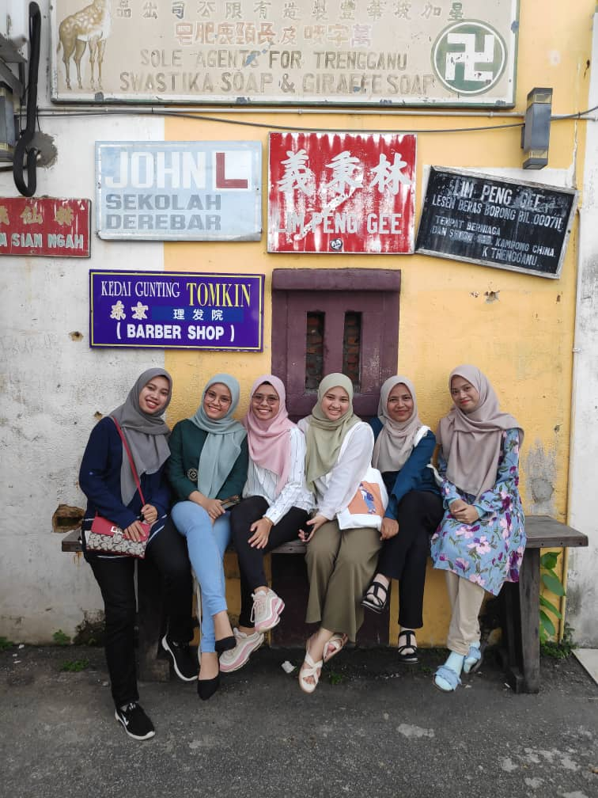
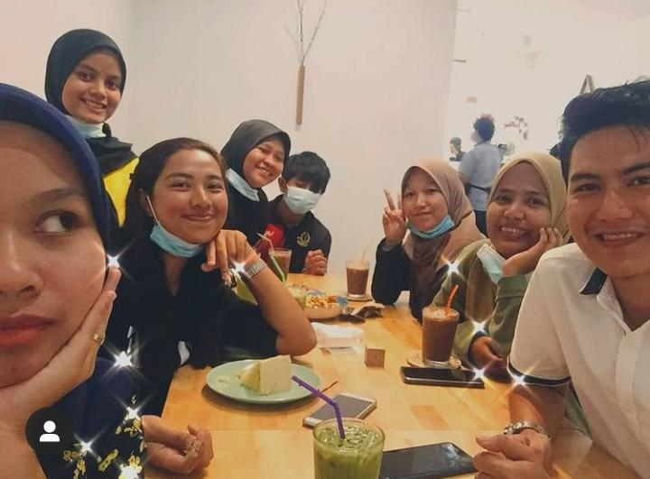

A little bit about me.Hope you enjoy to know my journey!

This is picture about my campus bestfriend. What i like the most about them is they so fun, kind, always help me at campus and always have with me. Our group name is MEKREK'S GENG. The member of our geng is me, Nur Arrisya, Athirah, Fatihah Balqis, Nur shahida and Izlyn Syafrina. This photo is our last photo before starting Online Distance Learning at home. This is also our last place that we visit together which is at Pasar Payang, Kuala Terengganu. I miss them so much, miss every moment together which is we eat together, study together, make assignment together, sleep together even wash a cloth still together.

This is picture about my secondary school bestfriend. My friend name is Amidee, Atikah, Asmaa, Philaivan, Izzati and Akma. During secondary school we always study togethers and they is my group study. They alway teach me when ever I am lose and not understand in study. Alhamdullilah we still contact and meet even everyone busy with own work and study. Almost 8 years our friendship me with Philaivan, Izzati and Akma but with Amidee, Atikah and Asmaa almost 10 years we know each other. So for me they know me well, everything about me and I know the most about them, Even our parent know each others and our parent be friend because of our friendship.